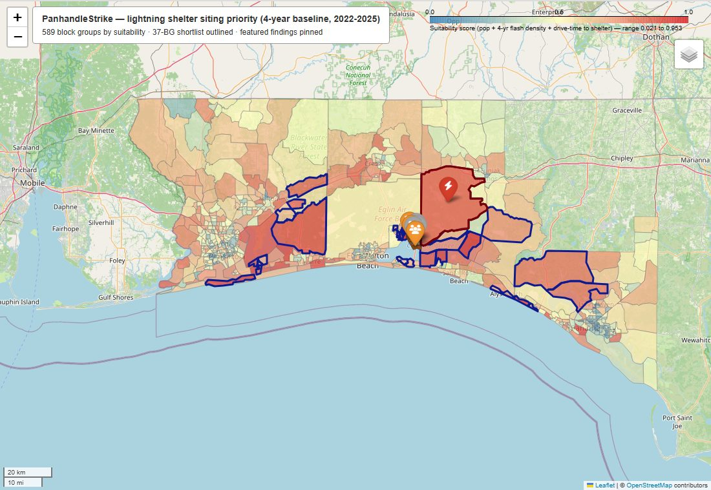

Analyst with 6+ years across financial and business analysis, data analytics, and technical project delivery. I build the dashboards leadership uses for budget decisions, turn satellite and Census data into siting decisions, research how RAG systems fail, and ship working AI software.
100+ Power BI & Tableau dashboards150+ employees trainedM.S. Data Science, UWFPensacola, FL
Projects
Each project links to its source code or live site, so you can check the numbers yourself.

Interactive · zoom, pan, click any area
Capstone · 2026GISMachine learning
PanhandleStrike: where to build lightning shelters
With Koushal Doddipatla · MS Data Science capstone, UWF
A site-suitability model for five Florida Panhandle counties. It combines four storm seasons of GOES satellite lightning data, Census population, the state's shelter inventory, and road-network drive times, and produces a shortlist of neighbourhoods that most need a shelter.
Rebuilt the satellite-data pipeline on multiprocessing after diagnosing an HDF5 thread-safety bottleneck. An estimated 18-day extraction ran in under 14 hours with zero errors.
Found that 128,659 residents live more than 15 minutes' drive from any shelter (multi-source Dijkstra over OpenStreetMap roads).
Two anomaly detectors (z-score and 30-minute burst) matched NOAA storm reports day for day during June 2025.
A 2026 out-of-time test showed the 2-year model saturating under El Niño. Retraining on 4 years fixed it.
When a RAG app's vector index isn't cleared between uploads, chunks from an old document can silently leak into answers about a new one. Our paper calls this Phantom Context Hallucination. CRAIL sits between retrieval and the user, scores the risk, and delivers the answer, holds it for a human reviewer, or blocks it. The Trust Loop layer then makes human review auditable: reviewers make reason-coded, timestamped decisions, and replies they write themselves are checked against the verified document before release.
73.3%of pilot queries contaminated with no warning
Register, inventory, loyalty and reporting, automated with Claude
A complete retail platform: register, inventory, loyalty tiers, discount campaigns, employee clock-in and shift tracking, and reporting. AI does the slow parts. It reads supplier invoices straight into stock and looks up products that public barcode databases don't know. A built-in assistant answers store and sales questions in plain language.
~2 h → mininventory entry, now a review-and-approve step
1,976products migrated from the legacy POS
153automated tests
USB and phone-camera barcode scanning, with UPC lookup and an AI fallback.
Revenue dashboards, low-stock alerts, and end-of-day to yearly reports on any date range.
Supabase backend with row-level security on all 11 tables, and an offline fallback so no sale is lost.
React 18 · Anthropic Claude API · Supabase (Postgres, Auth, RLS) · pdf.js · SheetJS · Vercel
Private repository. Walkthrough available on request.
LiveOpen dataWeb
H-1B Sponsor Directory
For international students searching for sponsoring employers
A searchable, filterable directory of every employer in the USCIS H-1B Employer Data Hub export, deduplicated across worksites. Employers are grouped by sponsorship volume and by field, which is inferred from NAICS codes and refined with keyword rules.
43,005unique employers
9industry fields
0build steps: plain HTML/JS
JavaScript · HTML/CSS · Python data prep · GitHub Pages
Chat across several PDFs at once. The app rewrites follow-up questions into standalone queries, retrieves with MMR for diversity, tags each chunk with its source file, and switches to a whole-document summary mode. Fixing its stale-embedding bug led directly to the CRAIL research.
This project aims to detect low-oxygen (hypoxic) events in Pensacola Bay by combining sparse field water-quality measurements with continuous USGS river-flow data. Ingestion works so far: ten years of daily flow from USGS gauge 02375500, and FL DEP dissolved-oxygen, salinity, and temperature readings from 7 estuary stations. Statistical baselines per station and season come next.
A full-stack travel assistant with a conversational interface, user accounts, a day-by-day itinerary builder, budget estimates, and destination recommendations. I wrote the product spec, tracked sprints in Taiga, and submitted it with a full project report.
Mishra, A. & Memon, S. (2026) · Working paper, in preparation for journal submission
Silent Poisoning: Stale Context Persistence, Adversarial Injection, and Human Trust Miscalibration in Retrieval-Augmented Generation Systems
This paper identifies Phantom Context Hallucination (PCH), a silent retrieval-integrity failure in FAISS-based RAG systems, and introduces CRAIL as a proof-of-concept safety layer. A 60-query pilot covered 6 document pairs in the policy, healthcare, and technical domains. Contamination appeared in 73.3% of queries with no user-visible warning, and CRAIL intercepted 72.7% of the contaminated outputs. Prototype →
Master's research · in progress
Automation bias and trust calibration in LLM-assisted decision making
A two-system study comparing a RAG assistant with human-in-the-loop checkpoints against a baseline RAG system with no intervention. The question is whether checkpoints actually change how carefully people verify AI output. It builds on the CRAIL infrastructure.
Coursework research · 2024
Neonatal health-risk classification: logistic regression, GAMs and SVMs
A comparative supervised-learning study weighing accuracy against interpretability for clinical use. GAMs were recommended because their risk factors can be explained to clinicians.
Experience
Jan 2025 – Present
Business Process Analyst
University of West Florida · Pensacola, FL
Develop and maintain 60+ Tableau and Power BI dashboards giving leadership real-time visibility into revenue, spending, and budget activity.
Produce departmental revenue and P&L reports and present them to leadership to guide budget decisions.
Audit millions of dollars in transactions against source records. I enforce validation and deposit-reconciliation rules and document data lineage, so every reported figure ties back to its source.
Wrote the department's operations manual, now the standard reference used department-wide.
Supervise and train a frontline student workforce (100+ trained) and own hiring, onboarding, and performance reviews.
Aug 2024 – Present
Senior Technical Analyst
Netnology Solutions · Remote
Lead software projects for multiple clients as the main liaison between clients and engineers, from requirements through production release.
Turn client conversations into business requirements, functional specs, workflow diagrams, and acceptance criteria. I also define and validate database designs with SQL and Power BI.
Designed the business processes, transaction flows, and reporting requirements for a cloud-based point-of-sale platform.
Implemented geo-location attendance and route tracking, giving management real-time visibility of field coverage.
Coordinate delivery across developers, UI/UX, and QA. I also manage hiring, onboarding, and payroll coordination for the team.
May 2024 – Aug 2024
IT Support Analyst
Liberty360 · Leeds, UK
Engineered IT support fixes for recurring system, access, and documentation issues in an aviation documentation environment.
Deployed a customised SharePoint environment that improved document accessibility, transparency, and workflow efficiency.
Dec 2021 – May 2024
Team Lead & Operations Manager
Soul Food Groups · Leeds, UK
Supervised 30+ frontline employees across shifts, covering staffing, scheduling, and daily operations for over 2 years.
Tracked daily KPIs and shift-level P&L, led compliance audits, and ran root-cause investigations into service issues.
Designed and delivered onboarding, training, and mentorship programmes for new hires.